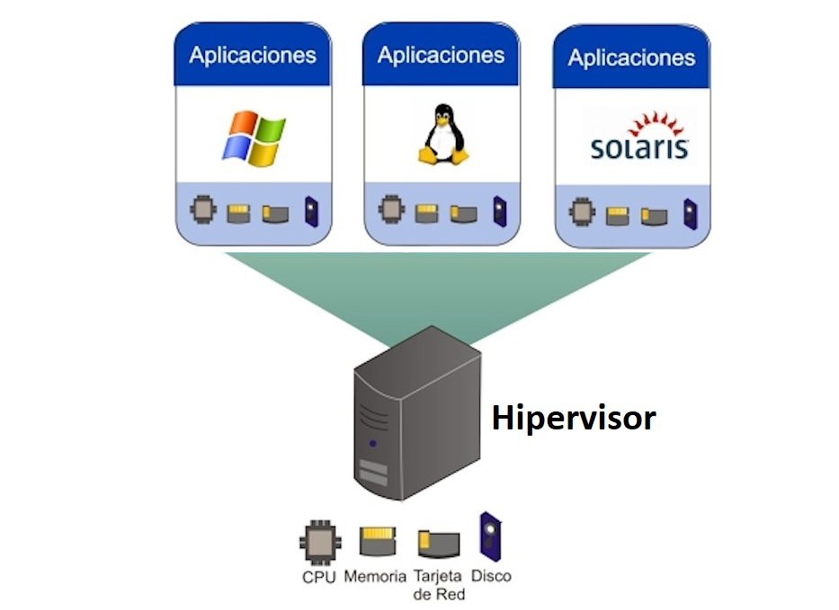

Tema:
Virtualización
¿Qué es?

La virtualización es una tecnología que permite la ejecución de varias máquinas virtuales sobre una máquina física, con el objetivo de aprovechar al máximo los recursos del sistema y mejorar su rendimiento. Básicamente, la virtualización utiliza software para imitar características o recursos de un hardware y así crear un sistema informático emulado o virtual. Esto elimina la necesidad de adquirir otro hardware para levantar un servicio, mejorando la agilidad, escalabilidad y flexibilidad de la infraestructura de tecnologías de la información.
¿Cómo funciona?

La virtualización ejecuta los procesos en una máquina física de otras máquinas virtuales; es decir; consigue que una computadora trabaje como muchas computadoras juntas; ¿de qué manera?: el software o hipervisor separa el sistema operativo de las aplicaciones del hardware. Esto trae como resultado que cada máquina virtual ejecute su propio sistema operativo y se comporte como una computadora independiente, a pesar de que se encuentra instalado en un solo hardware.
Ventajas y desventajas
Ventajas
Mejoras en seguridad
Cómoda y sencilla administración
Poco mantenimiento
Desventajas
Sobrecarga de rendimiento
Proliferación de máquinas virtuales
Problemas de seguridad
Punto único de fallo
Ejemplos
- Virtualización de aplicaciones: Permite al usuario utilizar un software que no está instalado en su equipo. Así, y bajo demanda, el servidor de la proveedora del software suministra al usuario un paquete que guarda las configuraciones y el entorno necesarios para ejecutar el software, de forma que podrá utilizarlo sin necesidad de llevar a cabo una descarga completa.
- Virtualización de escritorios: se crea un escritorio virtual que no está almacenado en el ordenador del usuario, sino en los servidores de la proveedora del servicio. Así, cada vez que un usuario esté accediendo a su escritorio virtual, los programas, aplicaciones, datos, etc., estarán albergados en dichos servidores.
- Virtualización de servidores: La virtualización de servidores divide estos en una serie de servidores virtuales, lo que permite beneficios como el ahorro de costes o la automatización de algunas tareas.
- Virtualización de almacenamiento: Es práctica habitual la de centralizar la información en un único hipervisor en el que podremos acceder a todos los datos, independientemente de que estos se encuentren almacenados en diferentes lugares y soportes, facilitando la gestión y mejorando la disponibilidad y la velocidad.
- Virtualización de redes: Utiliza los recursos físicos de una red con el objeto de formar diferentes redes virtuales que funcionen de forma independiente y separadas entre sí.
Gráficos

Lo que nos muestra la anterior imagen es un tipo de virtualización de infraestructura, la cual consiste en la creación de Máquinas Virtuales que simulan ser máquinas físicas en las cuales se puede instalar un Sistema operativo, y todas las demás aplicaciones como si fuese una computadora del mundo real. Estas máquinas virtuales pueden acceder a recursos como la red, tarjetas de video, sonido, cámaras, dispositivos USB o cualquier otro que el hipervisor comparta con ellas. Este tipo de virtualización permite gestionar los recursos de hardware que tendrá la VM en dependencia de los recursos reales disponibles.
Importancia
Es importante conocer el concepto y la aplicación de la virtualización como estrategia para optimizar los recursos físicos en el ambiente laboral y/o personal, ya que permite reducir costos, mejorar la administración de la plataforma, garantizar la continuidad del negocio y agilizar tareas que antes tomaban mucho tiempo. La virtualización también ofrece flexibilidad y escalabilidad, lo que la convierte en una herramienta valiosa para optimizar recursos en entornos laborales y personales.